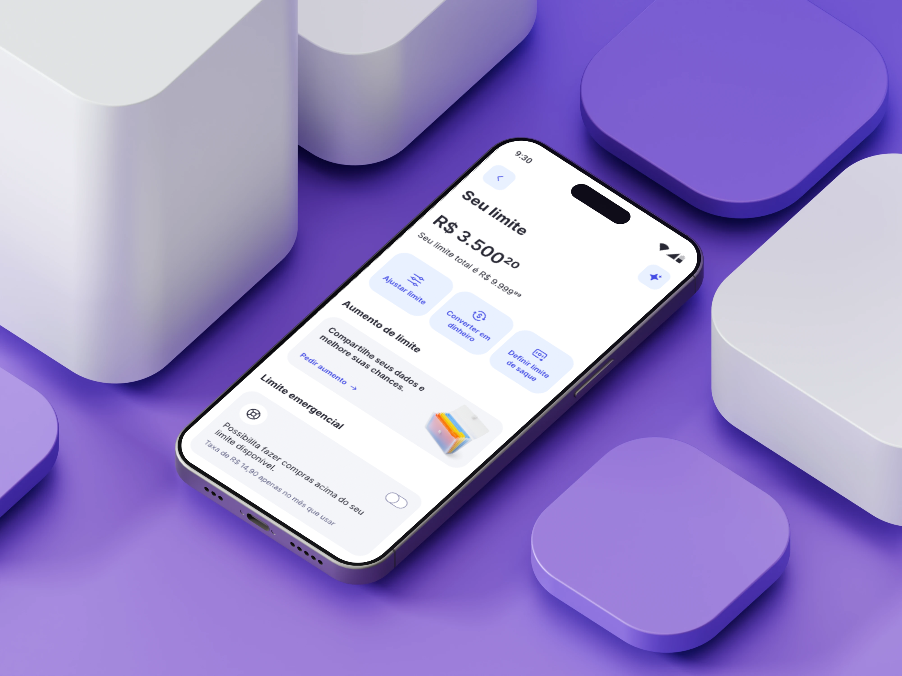
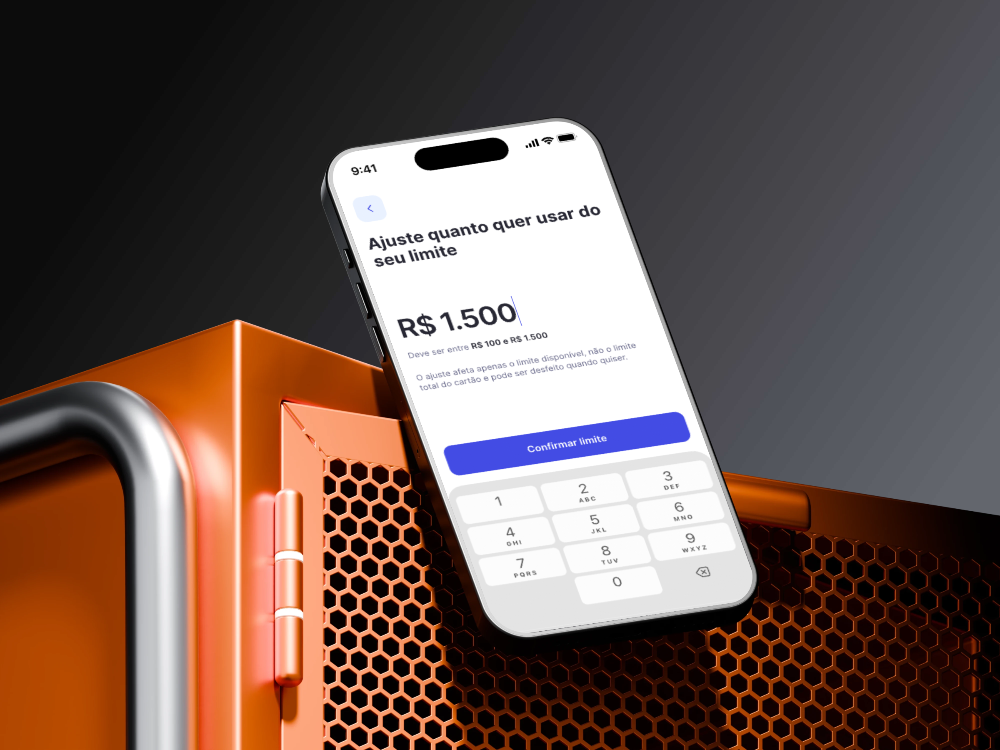

02.
Redesenhando a gestão de limites do cartão Mercado Pago para oferecer mais autonomia, clareza e controle sobre o crédito
O desafio
Como transformar uma tela limitada em uma experiência de gestão?
Antes, a tela era focada na solicitação de mais limite com o envio de documentos, havia oportunidades de melhoria na clareza e na hierarquia das informações.
Nosso desafio foi transformá-la em um hub mais intuitivo, reunindo diferentes funcionalidades de gestão do limite.
A oportunidade
Mais autonomia para gerenciar o próprio crédito.
A partir da análise de avaliações na App Store, Google Play e feedbacks do CX, identificamos oportunidades para oferecer mais clareza e autonomia na gestão do limite de crédito.
A experiência
Uma gestão de limites mais clara e integrada.
Reestruturamos a experiência para reunir as principais funcionalidades de gestão do limite em um único lugar, reorganizando as informações e facilitando o acesso às ações disponíveis.
O ajuste de limite
Mais precisão e autonomia na escolha.
Desenhamos uma experiência que permite ao usuário definir quanto do limite aprovado deseja deixar disponível para uso no cartão, respeitando os valores já utilizados na fatura.

Design
principles
Escalabilidade
O equilíbrio entre o funcional e o emocional.
Para o redesign do Hub de Limites, escolhemos uma abordagem mais equilibrada, buscando ir além do caráter essencialmente funcional da experiência anterior.
A nova direção combinou clareza, usabilidade e refinamento visual para criar uma experiência mais intuitiva e agradável, sem comprometer a simplicidade necessária à gestão financeira.
Hierarquia da informação
Hierarquia da
informação
Reorganizamos a experiência em módulos, estabelecendo diferentes níveis de hierarquia para destacar as informações essenciais, facilitar o acesso às funcionalidades de gestão e dar espaço a ações complementares.
Essa estrutura transformou uma tela antes focada no envio de documentos em um hub mais claro, intuitivo e preparado para evoluir.
-
Informações do limite
Visão dos valores disponíveis, aprovados e utilizados.
-
Gestão do limite
Ajuste do valor disponibilizado para uso no cartão.
-
Aumento de limite
Opções para solicitar mais crédito e acompanhar essa necessidade.
-
Limite emergencial
Funcionalidade complementar com menor prioridade na jornada.
-
Preferências de ofertas
Opção para desabilitar ofertas, posicionada no nível mais baixo.
Screens
1 de 9
A entrega
Redesign implementado e lançado em produção
A solução foi desenvolvida em colaboração com Design, Produto e Engenharia, considerando as necessidades dos usuários e as restrições técnicas.
Acompanhamos a preparação para o handoff (pré-HO), alinhando decisões de design e esclarecendo dúvidas da Engenharia para apoiar a implementação da experiência.